Um simulador educacional da B3 com dados reais e dinheiro virtual. Aqui você vê as abas, o fluxo da primeira sessão ao resultado, os dois modos de trabalho, como a IA entra e o que o app garante. Quer praticar cada tela? Vá ao Guia das telas.
Capturas de 09/10/2026 (app em desenvolvimento), com conta de teste e saldo virtual de R$ 10.000,00. Cotações e sinais mudam a cada dia; nada aqui é recomendação de investimento.
As abas do app
Cinco lugares, cada um com uma função. No Modo Operador, três deles mudam de nome (Mesa, Monitoramento e Posições), com o vocabulário de uma mesa de operações.
Acompanhar
O resumo do seu dia: saldo virtual, setups da sua watchlist, curva do patrimônio simulado e o estado do mercado.
O percurso completo, na ordem em que você o encontra. Cada passo depende do anterior.
Passo 1
Comece com um orçamento simulado
Na primeira abertura você escolhe como quer ser chamado, define o orçamento virtual e indica seu perfil de risco. O app avisa logo de início: é uma ferramenta educacional.
Saldo inicial fictício, identificado como tal.
Perfil conservador, moderado ou agressivo.
Entrada com Apple, Google ou e-mail.
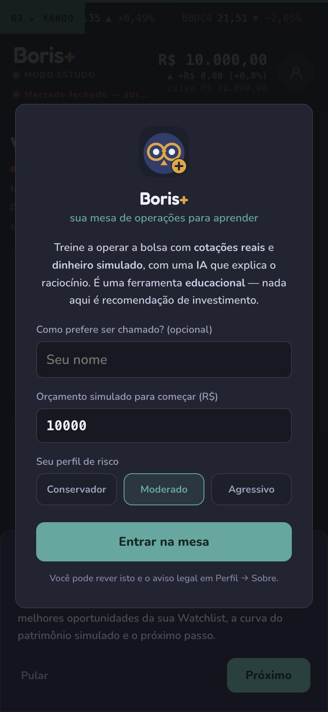
Passo 2
Acompanhe o seu dia
A tela inicial resume o dia: carteira, operações, a curva do patrimônio simulado e o que vale estudar. Sem histórico ainda? O app diz, em vez de preencher o vazio.
“Não há dados suficientes para concluir.” O Boris+ prefere admitir o que não sabe a inventar um número.
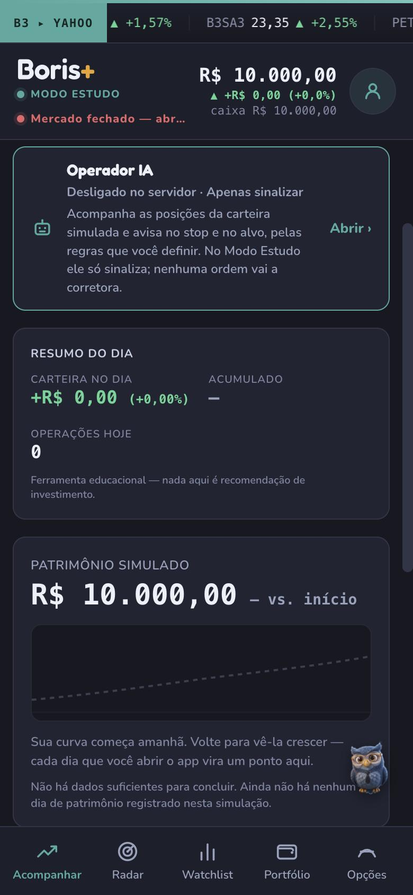
Passo 3
Explore o mercado no Radar
O Radar varre o universo de ativos com o motor de sinais e mostra quais condições técnicas estão ativas em cada papel, para você estudar.
Quantos ativos foram varridos e quantos ficaram sem dados.
Período em uso e horário da última leitura.
Cada card traz o plano educacional e a confiança, nunca uma promessa.
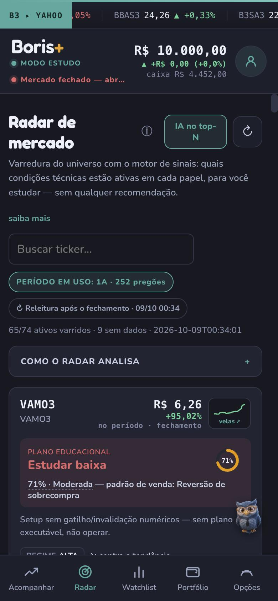
Passo 4
Escolha um ativo na Watchlist
Monte sua lista de estudo. Cada ativo mostra preço, variação, a fonte do dado (aqui, Yahoo) e o estado do pregão.
Fora do pregão, a tela informa o horário da última barra e quando a condição volta a ser verificada. O carimbo do dado nunca some.
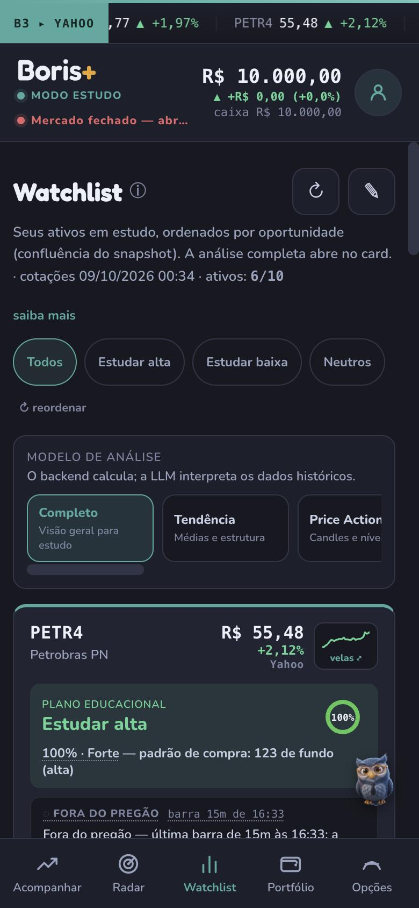
Passo 5
Entenda o plano antes de agir
O plano do setup é didático: onde o raciocínio se invalida, onde ele se confirma e qual a relação risco-retorno. Você vê o preço atual em relação a esses níveis.
Invalidação, gatilho e alvo calculados por regra, não pela IA.
Regime de mercado: a favor ou contra a tendência.
Aviso de amostra insuficiente quando o histórico medido é pouco.
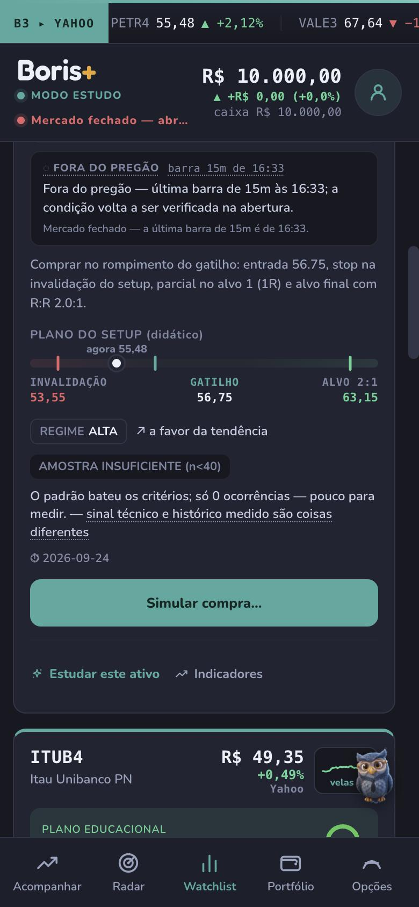
Passo 6
Envie uma ordem virtual
O ticket mostra quantidade, custo estimado e as regras da simulação antes de você confirmar.
Com o mercado fechado, a ordem fica pendente e executa na abertura.
O caixa já é reservado na confirmação.
Execução inteira ou nenhuma: não existe preenchimento parcial.
“Operação SIMULADA (paper trading). Nenhuma ordem real é enviada a uma corretora.”
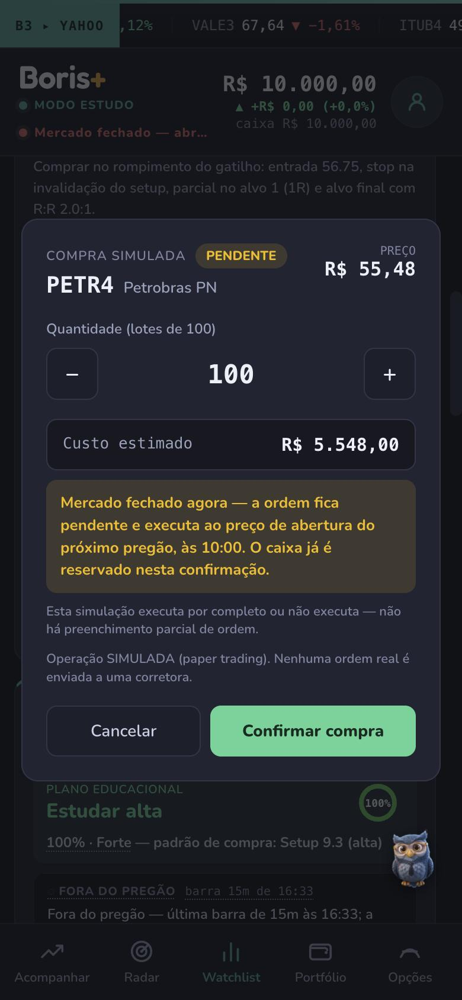
Passo 7
Acompanhe a execução simulada
Confirmada a ordem, o app registra o estado: aqui, pendente até a abertura do próximo pregão. O caixa disponível no topo já reflete a reserva.
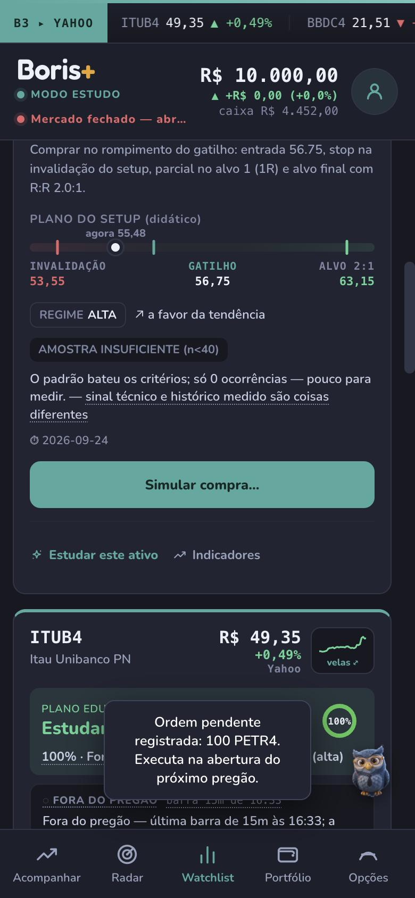
Passo 8
Veja o resultado na carteira
O Portfólio mostra patrimônio total, caixa disponível, valor em posições e resultado aberto, sempre como carteira simulada. Resultados positivos e negativos aparecem sem maquiagem.
Patrimônio, caixa e resultado calculados de forma determinística.
Histórico de operações a um toque.
Comparação com benchmark e drawdown conforme a carteira evolui.
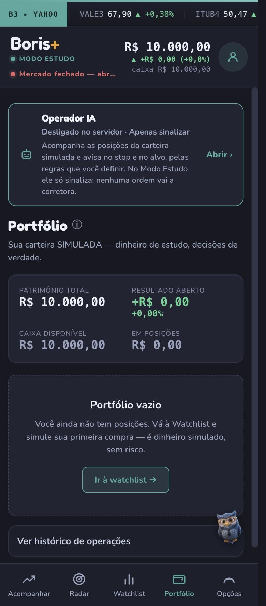
Passo 9
Estude opções sobre o que você tem
A aba Opções trabalha sobre as ações da sua carteira virtual. Cada ativo mostra quantas ações estão livres como lastro, como a semana evoluiu e as referências de volatilidade, suporte e resistência.
Escolha o objetivo: proteger de queda, gerar renda ou proteger com custo baixo.
Veja o pior caso e o custo antes de decidir; termos sublinhados abrem uma explicação.
Abrir um ativo não gasta consultas da sua cota.
Valores de opções nestas capturas vêm de um ambiente de demonstração e são ilustrativos. Conteúdo educacional: nada ali é ordem, recomendação ou promessa de resultado.
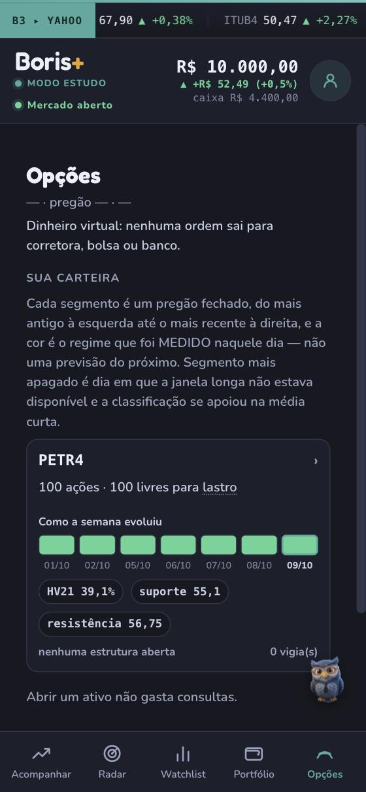
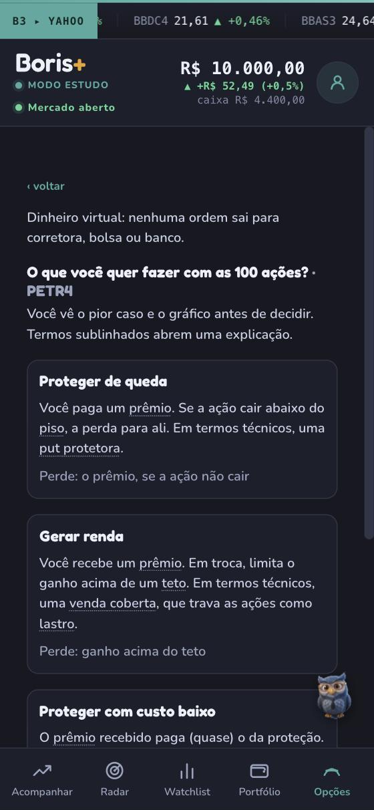
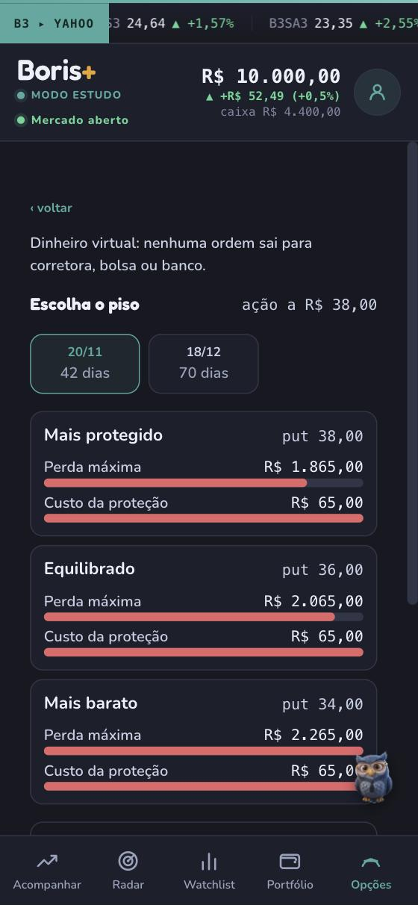
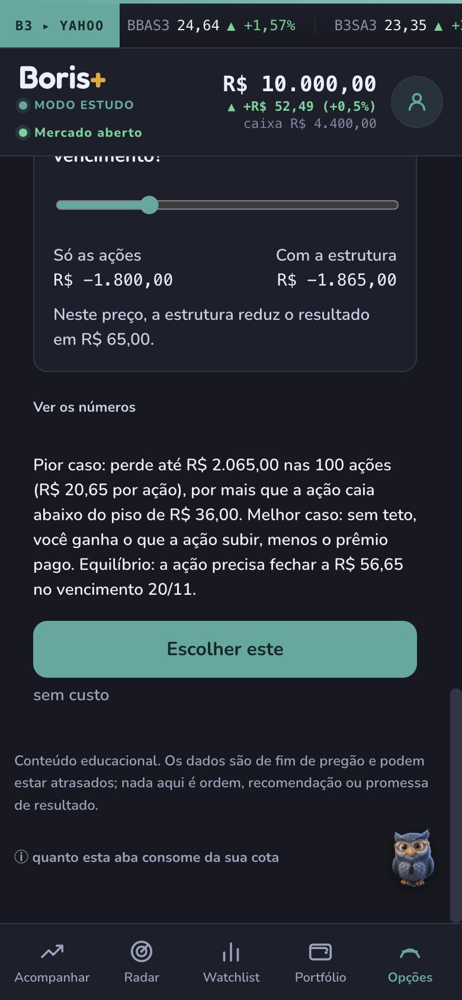
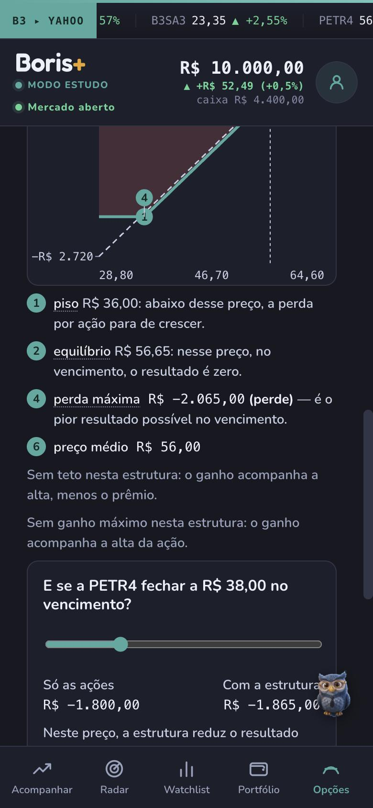
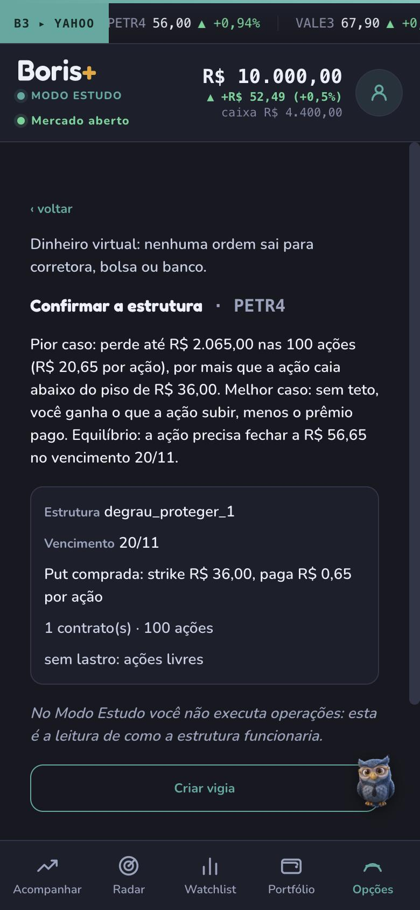
Passo 10
Do Estudo ao Modo Operador
No Estudo você lê como a estrutura funcionaria; nada é executado. Para executar, também de forma simulada, o app pede o Termo de Responsabilidade do Modo Operador: o aceite só é liberado depois de rolar o texto até o fim.
Termo claro: ferramenta de decisão e disciplina, sem recomendação.
Execução simulada da estrutura, com as ações travadas como lastro.
A aba Opções passa a mostrar a estrutura aberta sobre o ativo.
Códigos com “MOCK” nas capturas indicam o ambiente de demonstração. Dinheiro virtual, nenhuma ordem real.
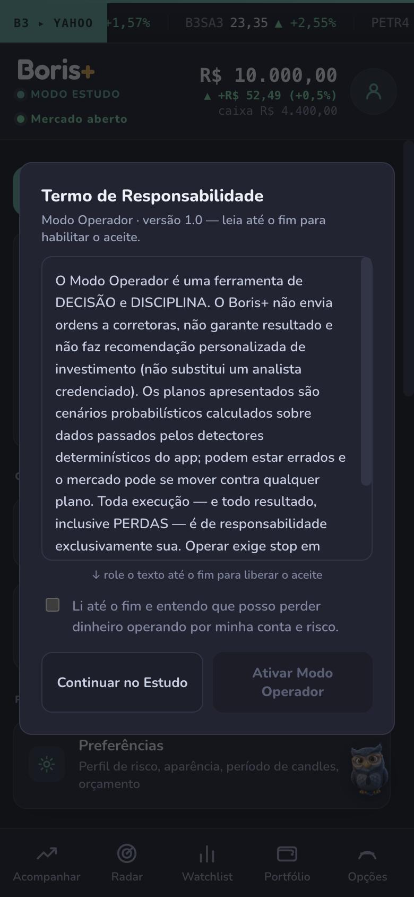
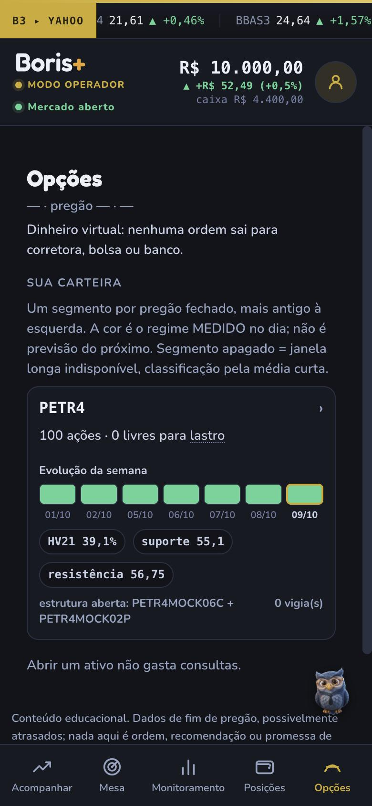
Passo 11
Converse com o Bóris
A coruja flutuante está em qualquer tela do Estudo. Ele explica indicadores, estrutura de preço, setups e o vocabulário da B3, com base nos dados que o app mostra.
O Bóris não recomenda compra ou venda, não envia ordem e não promete resultado. É o professor, nunca o operador.
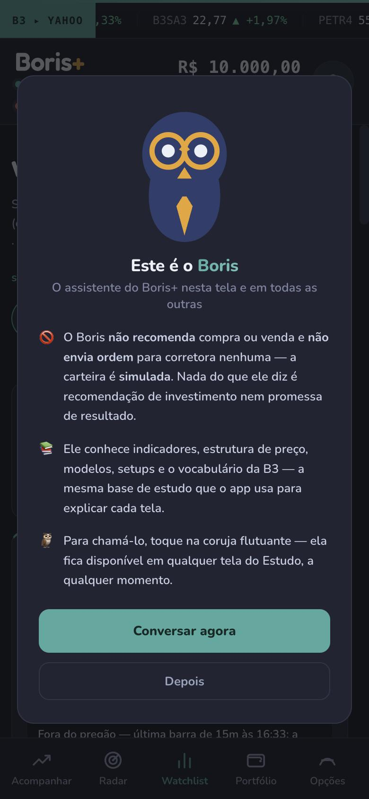
E na versão web
O mesmo app roda no navegador. Em telas largas, os cards se organizam em colunas; o conteúdo, o carimbo do dado e os avisos de simulação são os mesmos.
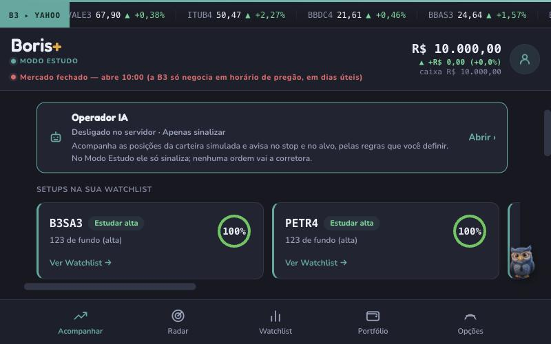
Acompanhar
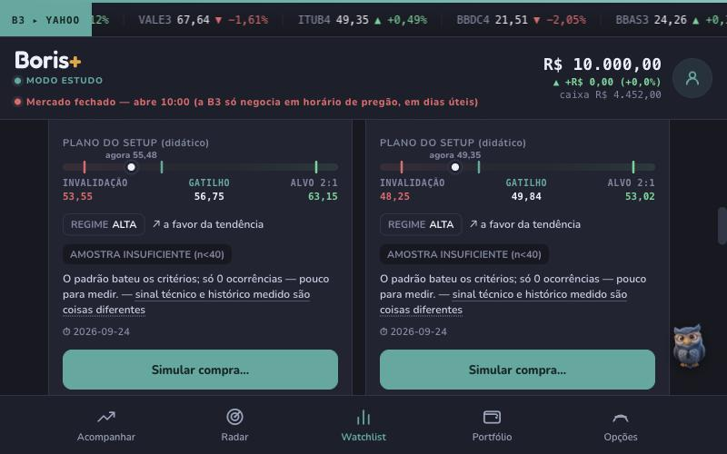
Watchlist em colunas, com o plano do setup
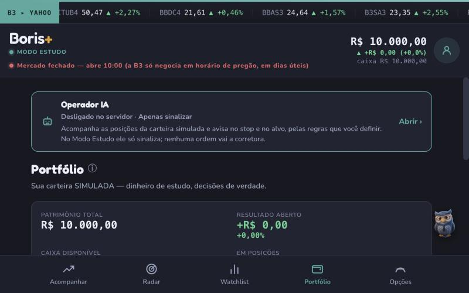
Portfólio
Dois modos de trabalho
O Estudo ensina; o Operador libera as decisões diretas. A troca fica em Perfil, pelo avatar no topo, e recarrega o app: é uma mudança de registro, não de tema.
Modo Estudo
A IA ensina, você decide
A IA explica o raciocínio (indicador, correlação, decisão) e nunca executa.
Vocabulário de professor: Radar, Watchlist, Portfólio.
Compra e venda simuladas, feitas por você.
Acento azul-esverdeado.
Modo Operador
Decisões diretas, com disciplina
Vocabulário de mesa de operações: Mesa, Monitoramento, Posições.
Tudo do Estudo, mais o ciclo automático do Operador IA: trailing stop, alvo dinâmico e avisos de gatilho, com kill-switch para interromper tudo.
Antes de ativar, o Termo de Responsabilidade: o aceite só é liberado ao final da leitura.
Acento dourado.
Verde e vermelho nunca são cor de modo: nos dois, significam uma coisa só (compra e venda, ganho e perda). O Operador também executa de forma simulada, com dinheiro virtual.
Dado confiável, estado honesto
Todo número de mercado carrega a fonte, o horário e se é em tempo real, atrasado ou histórico. Quando algo falha, o app mostra o estado real em vez de inventar.
Mercado fechado
Fora do pregão. Os preços são do último fechamento e o app diz isso.
Dado atrasado
A cotação chegou, mas não é do instante; o horário real da leitura aparece.
Frescor não medido
O app não conseguiu saber a idade do dado e não afirma que está em dia.
Quantidade inválida
A ordem é recusada inteira e a recusa entra no histórico com o motivo.
Ordem pendente
Com o mercado fechado, a ordem aguarda a abertura, e o caixa já fica reservado.
Não há dados suficientes para concluir
A resposta correta quando a evidência não sustenta uma conclusão. É recurso, não erro.
A IA, em duas camadas
O Bóris explica; quem calcula é o motor. A manchete do card vem do motor determinístico, e a IA explica o que está abaixo dela.
Camada gratuita
Verbetes escritos à mão
Toque num termo sublinhado (gatilho, confluência, risco) e a explicação abre ali, sem sair da tela. Não passa por modelo de IA, responde na hora e funciona mesmo com a cota esgotada.
Camada com cota
Análise e perguntas livres
“Estudar este ativo” lê o pacote técnico que o motor já calculou e explica o que cada indicador marca, o que confirma, o que diverge e o que mudaria a leitura. Gasta uma análise da sua cota; se acabar, o app mostra a explicação automática e diz que é ela.
Toda resposta de IA traz o rótulo de conteúdo educacional, não recomendação.
A IA só cita número que está na tela. Se faltar, diz que a informação não aparece.
O Bóris lê as respostas em voz alta por padrão, e dá para desligar em Perfil.
Quem prefere pode usar a própria chave de modelo, assumindo o gasto no provedor.
Plano gratuito: cota mensal e diária de análises de IA [CONFIRMAR COTAS E PLANOS ANTES DE PUBLICAR].
Uma rotina de treino
1
Antes da abertura
Olhe o Radar e não toque em nada. A varredura e o plano de cada candidato já estão montados: decidir antes é metade do treino.
2
Durante o pregão
Responda ao gatilho, não ao preço. O app avisa quando a condição é atingida, com o carimbo da barra.
3
Depois do fechamento
Confira o histórico, inclusive as ordens recusadas: elas ensinam mais que as aceitas.
4
Uma vez por semana
Compare sua evolução com o benchmark e olhe a eficiência da IA: acerto, expectância e curva de risco, com aviso quando a amostra é pequena.
O que o Boris+ nunca faz
Algumas regras não mudam, em nenhum modo e em nenhum plano.
Enviar ordem real. Não existe caminho no produto para corretora, bolsa ou conta bancária.
Deixar a IA calcular números financeiros. Saldo, preço médio, resultado, custo e drawdown vêm de regras determinísticas.
Inventar valor. Se a fonte falha, mostra o estado real e impede a operação que dependeria do dado.
Prometer resultado. Sem garantia de acerto, sem linguagem de enriquecimento rápido, sem esconder perda.
Virar recomendação. Simulação é simulação: nada ali é recomendação de investimento.
Plataformas e conta
iPhone
App nativo, com notificações e a voz do Bóris. A conta guarda a carteira virtual e o histórico entre aparelhos.
Navegador
O mesmo app em tela larga, com os cards em colunas, os mesmos avisos e o mesmo carimbo de dado.
Conta
Entrada com Apple, Google ou e-mail. Conta nova nasce limpa, sem posições de demonstração.
Configuração técnica nomeada que o motor reconhece no gráfico. Quem decide se existe é regra determinística, nunca a IA.
Confluência
Quantos sinais independentes apontam para a mesma direção. É o critério de ordenação do Radar.
Armado · Gatilho · Esticado
Os três estados de timing: condição montada e não disparada; o momento do disparo; preço já corrido demais para a entrada original.
Risco em R
A distância entre entrada e stop, usada como unidade. Um alvo de 2R mira o dobro do que se arrisca.
Trailing stop e alvo dinâmico
O trailing stop acompanha o preço a favor e nunca contra, protegendo o ganho. O alvo dinâmico se estende quando o movimento continua, com freio por extensão e por relação risco-retorno.
Kill-switch
Interrupção geral do ciclo automático: o Operador IA fica parado até ser religado.
Lastro e vigia (Opções)
Lastro são as ações que ficam comprometidas com uma estrutura de opções. Vigia acompanha uma estrutura de interesse.
Drawdown e expectância
Drawdown é a maior queda do topo até o fundo no período. Expectância é quanto se ganha por operação, em média: pode ser negativa mesmo com taxa de acerto alta.
Dúvidas sobre o app
Preciso saber de bolsa para começar?
Não. O Modo Estudo foi desenhado para quem está começando, com explicações dentro de cada card. Se quiser base antes, veja o treinamento de conceitos.
O que acontece se eu perder tudo no simulador?
Nada além do aprendizado: o saldo é virtual. O app mostra ganhos e perdas com o mesmo peso visual, para você aprender com os dois.
Quanto custa?
As funções básicas são gratuitas, com cota de análises de IA. Planos pagos ampliam a cota. [VALORES E CONDIÇÕES A DEFINIR]
As opções executam ordem de verdade?
Não. Na aba Opções, o Estudo mostra como a estrutura funcionaria e o Operador executa de forma simulada, sempre com dinheiro virtual.
Pronto para treinar?
Baixe o app ou comece pelo guia: uma missão e um teste rápido para cada tela.